China Employee Termination in 2026: Pulse Readiness-Audit Brief for Foreign Employers
Key takeaways
- In China termination cases, many failures happen because teams start communication before they are truly execution-ready.
- A readiness-audit model helps foreign employers decide clearly: Go, Hold, or Stop.
- The most critical readiness checks are legal route defensibility, payroll/tax lock, and script consistency.
- City-level interpretation and evidence quality should be verified before final notice actions.
- This brief leads with practical decision guidance; legal depth is in a secondary appendix.
What changed and why this matters now
Cross-border teams often ask one question too late: “Are we actually ready to execute this case?” By the time that question is asked, manager communication may already be drafted, payroll may still be changing, and legal assumptions may be stale. This sequence creates avoidable cost and credibility damage.
This run rotates to a readiness-audit brief format. Instead of focusing only on route choice or cost escalation, it gives a pre-action diagnostic that senior teams can use in weekly operations meetings. The benefit is straightforward: faster alignment, fewer reversals, and stronger defensibility when cases become contested.
Plain-language legal and regulatory context first
China termination handling is legally constrained and process-sensitive. For foreign employers, this means that reason, documentation, payout logic, and communication must align as one coherent record. If one layer drifts, the overall case becomes weaker.
National legal rules are a baseline, but city-level implementation can materially affect practical risk. That is why readiness should include a local-interpretation checkpoint, not only a national-law citation.
Pulse readiness-audit cards (Go / Hold / Stop)
Card 1 — Legal route readiness
Audit question: Is the selected route still supportable by current facts and documents?
Go: route memo is current, fallback conditions are documented, and contradictions are resolved.
Hold: minor contradictions remain but are fixable quickly.
Stop: route basis depends on assumptions not supported by current records.
Foreign-employer implication: Do not treat internal confidence as legal readiness; require evidence-backed route confirmation.
Card 2 — Evidence integrity readiness
Audit question: Can an independent reviewer reconstruct the facts without guesswork?
Go: chronology is complete, source records are version-controlled, and key events are timestamped.
Hold: chronology exists but contains unresolved sequence or ownership gaps.
Stop: evidence packages are fragmented across teams with no reliable master index.
Card 3 — Payroll and IIT readiness
Audit question: Is payout logic locked and aligned to approved route assumptions?
Go: one final worksheet version, legal/payroll co-approval, and payment execution plan in place.
Hold: components are mostly set, but tax treatment assumptions need one more confirmation.
Stop: multiple worksheet versions are active or core payout logic remains disputed.
Card 4 — Communication readiness
Audit question: Are manager and HR scripts aligned to the current approved route and worksheet?
Go: script pack is current, spokesperson assigned, escalation language prepared.
Hold: scripts exist but recent case updates were not reflected yet.
Stop: communication plan relies on superseded legal or payroll assumptions.
Card 5 — Closure readiness
Audit question: Can the case be defended after execution without reassembling history?
Go: closure checklist, archive index, and retrieval test requirements are pre-defined.
Hold: archive design exists but ownership and retrieval SLA are unclear.
Stop: closure is treated as an afterthought with no retrieval standard.
How to score readiness in 10 minutes
Assign each card a score: Go=2, Hold=1, Stop=0. Total possible score is 10.
- 8-10: execute when all Stop items are zero.
- 5-7: hold and remediate before communication.
- 0-4: stop and reframe case strategy.
This quick scoring system gives executives a simple dashboard and avoids false certainty in cross-border calls.
Why this format works for foreign clients
Foreign operators usually manage China cases with distributed teams and delayed approvals. A readiness audit translates legal complexity into operational checks that non-specialists can understand. It also reduces communication mistakes: teams know exactly which controls must be green before any manager conversation.
Most importantly, it improves decision quality under time pressure. Instead of arguing abstract legal points, teams assess concrete readiness evidence and agree on immediate remediation actions.
Practical scenarios
Scenario A: strong legal view, weak payroll lock
Legal believes route selection is defensible, but payroll has two active payout worksheets and unresolved tax assumptions.
Audit result: Card 3 = Stop; overall status = Hold/Stop.
Recommended action: freeze communication, consolidate worksheet ownership, and finalize tax assumption note before any outreach.
Scenario B: good documents, outdated scripts
Evidence and payout are ready, but manager scripts still reflect prior case assumptions.
Audit result: Card 4 = Hold.
Recommended action: run rapid script refresh, re-brief manager, and record briefing completion.
Scenario C: execution complete, closure weak
Case executed with minimal friction, but archive structure is inconsistent and retrieval is uncertain.
Audit result: Card 5 = Hold/Stop for post-case defensibility.
Recommended action: apply closure remediation sprint and run retrieval simulation before final case sign-off.
Daily operations SOP (role ownership)
HR case owner: runs the 5-card audit at intake and before communication; updates status after every material change.
Legal/compliance owner: signs off Card 1 criteria, defines fallback route triggers, and approves any route switch.
Payroll owner: controls Card 3 readiness via version governance, payout validation, and tax assumption documentation.
Manager owner: executes Card 4 standards by using approved script packs and escalation language only.
Vendor/EOR partner: supports local practice checks, document quality control, and closure retrieval standards.
Document checklist and timing cues
- Pre-decision stage: route memo draft, chronology file, contradiction log, local interpretation note.
- Pre-communication stage: final worksheet, IIT assumption note, approvals, script package, escalation contacts.
- Execution stage: payment proof plan, acknowledgement templates, incident protocol note.
- Post-execution stage: closure memo, archive index, retrieval-test evidence, lessons learned.
Exception handling playbook
- Route assumptions invalidated: downgrade Card 1 to Stop, pause execution, and issue revised route memo.
- Payroll conflict discovered late: downgrade Card 3 to Stop, revoke draft worksheets, and relock approvals.
- Off-script manager comment: downgrade Card 4 to Hold, initiate correction protocol, document remediation.
- Unresolved local interpretation risk: keep Card 1 at Hold until specialist confirmation is recorded.
System implementation notes
Configure HR workflow tools so communication tasks cannot be scheduled unless Cards 1-4 are at Go. In payroll systems, enforce immutable worksheet versions and lock status fields. In collaboration tools, link script versions directly to case IDs and maintain audit timestamps.
For reporting, publish a weekly readiness dashboard: average score at intake, percentage of cases with Stop status before communication, post-communication correction rate, and closure retrieval pass rate.
Common mistakes and prevention
- Mistake: treating readiness as subjective judgment.
Prevention: standardized Go/Hold/Stop cards with score thresholds.
- Mistake: allowing payroll updates after script finalization.
Prevention: sequence control: Card 3 must be Go before Card 4 approval.
- Mistake: skipping local interpretation checks.
Prevention: mandatory locality note in Card 1 evidence set.
- Mistake: ending cases without retrieval standards.
Prevention: Card 5 closure gate and archive test requirement.
What to do now
Run the 5-card readiness audit on all active China termination matters this week. Flag every Stop item and assign a single owner plus deadline for remediation. If any case has Card 3 or Card 4 below Go, enforce a communication hold immediately.
Then establish a standing 20-minute readiness review with HR, legal, payroll, and local operations. Keep it simple: score changes, top blockers, and one intervention per case.
What to watch next
- Whether Card 3 (payroll/IIT) is the dominant blocker in your current pipeline.
- Whether script misalignment events are rising under speed pressure.
- Whether closure retrieval pass rates improve after Card 5 becomes mandatory.
FAQ
1) What is the main advantage of readiness cards?
They convert legal and process complexity into fast, consistent decision signals for non-specialists.
2) Can we proceed with one Hold status?
Sometimes, but only if there is no Stop status and risk acceptance is explicitly documented.
3) Which card usually predicts late-stage failure?
Card 3 (payroll/IIT readiness) is a frequent early warning.
4) How often should scoring be updated?
At intake, before communication, and after any material fact or route change.
5) Is this legal advice?
No. It is an operational control framework and does not replace professional legal or tax advice.
6) What KPI should leadership monitor first?
Post-communication correction rate is a high-signal indicator of readiness quality.
Legal depth appendix (secondary)
This brief relies on the PRC Labor Contract Law baseline and practitioner/payroll references used by multinational employers. It reflects an operational interpretation framework rather than a jurisdiction-specific legal opinion. Outcomes remain dependent on case facts, local implementation, and evidence quality.
For material cases, route decisions, payout treatment, and communication language should be validated with qualified local legal and tax advisors.
Soft CTA
If your team wants a compliance-first execution framework for China employee termination, China-Payroll.com can help implement readiness audits, payroll lock controls, and defensible closure workflows.
Disclaimer
This content is informational only and does not constitute legal, tax, or employment advice.
Sources
- National People’s Congress of China, Labor Contract Law of the PRC (English), accessed 2026-03-07: http://www.npc.gov.cn/zgrdw/englishnpc/Law/2007-12/13/content_1384064.htm
- ICLG, Employment & Labour Laws and Regulations: China, accessed 2026-03-07: https://iclg.com/practice-areas/employment-and-labour-laws-and-regulations/china
- Littler, Key Recent Developments in China’s Employment Law, accessed 2026-03-07: https://www.littler.com/news-analysis/asap/key-recent-developments-chinas-employment-law-china-us-comparative-perspective
- PwC Tax Summaries, China Individual — Taxes on Personal Income, accessed 2026-03-07: https://taxsummaries.pwc.com/peoples-republic-of-china/individual/taxes-on-personal-income
- China Briefing, China Human Resources and Payroll Guide, accessed 2026-03-07: https://www.china-briefing.com/doing-business-guide/china/human-resources-and-payroll
Need local employment support in China?
If you need a compliance-first partner for hiring, payroll, and risk controls in China, China-Payroll.com can help evaluate the right setup.
Image Prompt Pack
Create a 16:9 hero image for article title: 'China Employee Termination in 2026: Pulse Readiness-Audit Brief for Foreign Employers'. Scene: global operations team evaluating workforce model options for China market entry. Include motifs: decision matrix, org c…